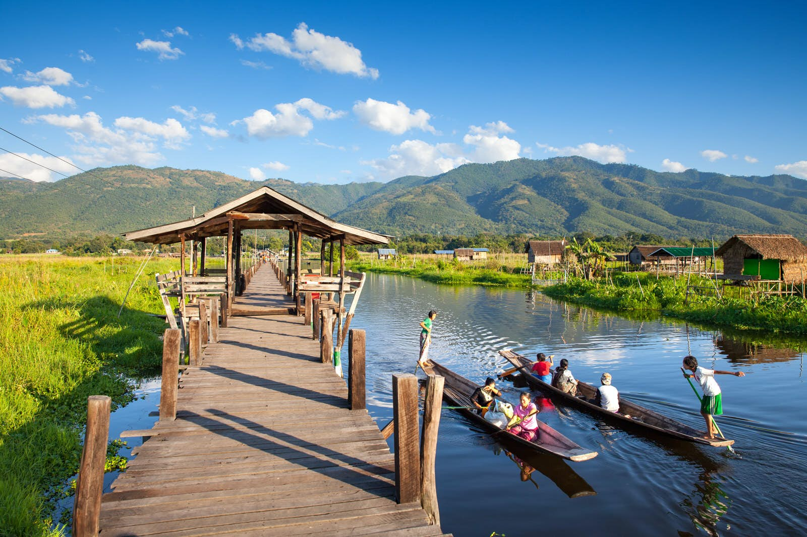

Brief Information about Inlay Lake

Inle Lake is the second largest natural lake in Myanmar. It is situated in the middle of the Nyaungshwe Valley, nestled between two mountain ranges that extend north to south. The lake has a length of 22km and a width of 11km and is 875 metres above sea level. Inle Lake is 35 kilometres away from the nearest airport at Heho, and there are flights to there from both Yangon and Mandalay.
Inle Lake Trekking: from Kalaw to Inle Lake
If you like going on treks or simply looking for an adventure-filled experience in Myanmar, you need to go on a trekking adventure from Kalaw to Inle Lake. You can do this trek for one day but most travelers would recommend staying for one night via a homestay.
Inle Lake Activities
At first glance, it seems like there is not much to do at Inle Lake. Visiting pagodas is a given, since it is done in almost every city in Myanmar. Sightseeing is also an expected activity. As a rural area, Inle Lake and its surrounding areas boast stunning lake views and glimpses of a picturesque countryside. Indeed, Inle Lake is the destination for a laid-back and relaxing vacation. Nonetheless, the lake offers its visitors several things to do in its vicinity.